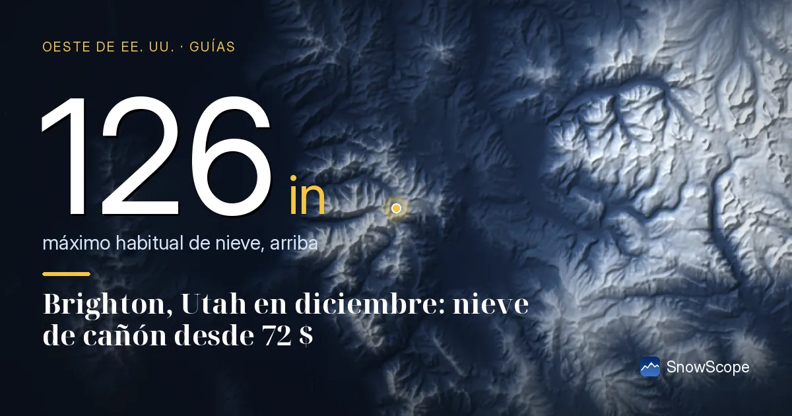

Brighton, Utah en diciembre: nieve de cañón desde 72 $
Brighton se sitúa en lo alto del Big Cottonwood Canyon, donde la cota de base te da ventaja sobre los centros de esquí más bajos de Utah en diciembre. La nieve de principios de temporada aquí es lo bastante fiable como para que el 89 por ciento de los inviernos anteriores tuviera profundidad medible a mitad de mes, y un forfait de un día comienza en 72 dólares si lo reservas con anticipación.
Consulta la previsión de nieve en tiempo real de Brighton Resort en la app SnowScopeEspesor de nieve, alertas de nieve polvo y mapa 3D, gratis.
Por qué la altitud importa en diciembre
La base de Brighton a 2666 m significa que comienza a acumular nieve semanas antes que los centros de esquí en los valles. Para mediados de octubre, la nieve persistente suele llegar a media montaña a 2925 m. Esta ventaja inicial es crucial: el 1 de diciembre, cuando el terreno más bajo suele estar desprovisto de nieve, media montaña aquí ya acumula alrededor de 70 cm.
La ubicación del cañón también importa. El aire frío desciende desde arriba, y el terreno de cresta a 3185 m atrapa nieve que las áreas más bajas pierden. Por eso la diferencia de profundidad entre base y cumbre crece a lo largo del mes.

Seguimiento de diciembre semana a semana
El 15 de diciembre, media montaña está a 94 cm, con 68 cm en la base y 115 cm en la cima. En casi 9 de cada 10 inviernos en el registro, media montaña tenía al menos 50 cm en esta fecha. Incluso un diciembre flojo —uno de cada diez— dejó 52 cm allí.
El día de Navidad el panorama se fortalece. Media montaña alcanza 122 cm, y el 98 por ciento de los inviernos tuvieron al menos 50 cm. Para el 31 de diciembre la profundidad típica es 133 cm a media montaña, con el 100 por ciento de los inviernos por encima de 50 cm.

Precios de forfaits y cuándo comprar
Brighton utiliza precios dinámicos en sus forfaits de un día para 2026/27. El precio inicial es 72 dólares, pero solo para compradores anticipados; las fechas de vacaciones y las compras de último momento cuestan más. El consejo más claro del centro es simple: compra tu forfait en línea antes de la fecha si quieres la mejor tarifa.
Para una visita de varios días, la Go Card te permite cargar tres, cuatro o cinco forfaits de día completo en una tarjeta con descuentos de hasta el 40 por ciento de la tarifa de ventana de día completo. Consulta la página del centro para conocer la cantidad exacta en dólares en tus fechas elegidas, ya que los precios cambian según la demanda.
Cómo Brighton se compara con otras opciones cercanas
Park City Mountain Resort se sitúa al otro lado de la cresta y es famoso por su tamaño, pero su historial de nieve cuenta una historia diferente en diciembre. El 15 de diciembre, media montaña de Park City acumula típicamente 64 cm, y solo el 72 por ciento de los inviernos tuvieron 50 cm o más. Los números de Brighton son más fuertes en la misma fecha.
Beaver Mountain cerca de Logan cobra un forfait de adulto fijo de 75 dólares y tiene media montaña a 57 cm en un típico 15 de diciembre, con solo el 57 por ciento de los inviernos por encima de 50 cm. Brighton cuesta aproximadamente lo mismo si atrapas un precio de madrugador, pero ofrece una profundidad de nieve más confiable.
¿Se ha vuelto más fina la nieve de diciembre?
El registro largo muestra un cambio. En los primeros 15 inviernos del archivo (1980-81 a 1994-95), media montaña acumulaba típicamente 128 cm el 15 de diciembre, y cada invierno tuvo 50 cm o más. Era casi perfecta la confiabilidad.
En los 15 inviernos más recientes (2011-12 a 2025-26), el valor mediano bajó a 68 cm, y solo el 73 por ciento de los inviernos alcanzaron 50 cm. La temporada pasada dejó solo 43 cm en esa fecha. Diciembre en Brighton sigue siendo una de las apuestas más seguras de principios de temporada en Utah, pero ya no es la cosa segura que fue una vez.
Qué empacar y qué saber antes de ir
Big Cottonwood Canyon requiere normas de tracción invernal cuando cae nieve. Lleva cadenas en tu coche o utiliza un vehículo de tracción en las cuatro ruedas con neumáticos de invierno adecuados. El autobús del cañón funciona todo el año y evita el viaje por completo si eso te atrae.
Consulta el pronóstico de dos semanas antes de reservar un viaje en un diciembre seco. Los esquís más bajos pueden adelgazar rápidamente si la nieve es ligera. Media montaña y arriba permanecen más confiables, así que planifica pasar tu día en elevaciones más altas si la base parece marginal.
Consejos para esquiadores
- Compra tu forfait de un día en línea varias semanas antes. Los precios dinámicos recompensan la reserva anticipada; los forfaits de vacaciones y de último momento cuestan 20 a 40 dólares más.
- Si el presupuesto es ajustado, evita la última semana de diciembre. Ese tramo típicamente cuesta más por forfait.
- Lleva cadenas de neumáticos o conduce con tracción en las cuatro ruedas en tormentas. Big Cottonwood Canyon impone normas de tracción, o toma el autobús del cañón para saltarte el viaje.
- Dirígete a media montaña o más arriba si diciembre ha sido seco. La base puede ser fina; las elevaciones superiores retienen más profundidad.
- Consulta el boletín del Centro de Aludes de Utah antes de ir fuera de pista.
Sobre estas cifras
Los espesores de nieve de las estaciones son la nieve más profunda en las pistas altas en la fecha indicada; son estimaciones para una zona, no una medida en un punto. Las previsiones pueden cambiar. Consulta siempre el boletín oficial de aludes antes de salir fuera de pista.
Boletines oficiales de aludes: Utah Avalanche Center
Citar este informe
Para investigación, docencia o prensa: cifras y gráficos reutilizables libremente bajo CC BY 4.0 con esta cita.
SnowScope (2026), Brighton, Utah en diciembre: nieve de cañón desde 72 $, https://snowscope.app/blog/es/2026/11/brighton-utah-december-lift-tickets-snow.html, consultado el 2026-11-14
SnowScope (Atlas Labs). (2026, November 14). Brighton, Utah en diciembre: nieve de cañón desde 72 $. SnowScope snow reports. https://snowscope.app/blog/es/2026/11/brighton-utah-december-lift-tickets-snow.html
BibTeX
@misc{snowscope2026brightonutahdecemberlift,
author = {{SnowScope (Atlas Labs)}},
title = {Brighton, Utah en diciembre: nieve de cañón desde 72 $},
year = {2026},
month = nov,
howpublished = {\url{https://snowscope.app/blog/es/2026/11/brighton-utah-december-lift-tickets-snow.html}},
note = {Published 2026-11-14 15:27 UTC; accessed 2026-11-14}
}· CC BY 4.0 · Métodos, datos y herramientas →
Brighton Resort: nieve y temperatura según la altura, este invierno vs el pasado (herramientas) →
Sigue Brighton Resort
Gratis: un aviso cuando llega la nieve y la previsión cada mañana.